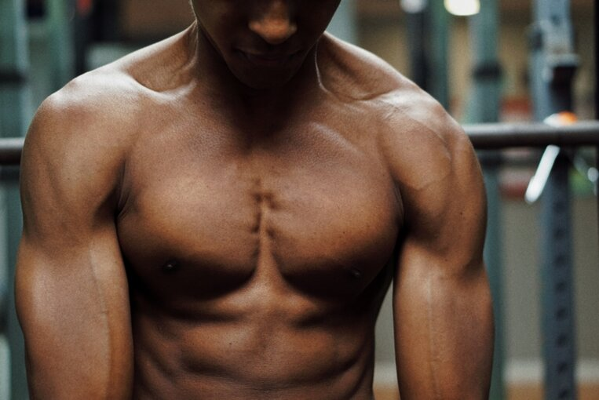
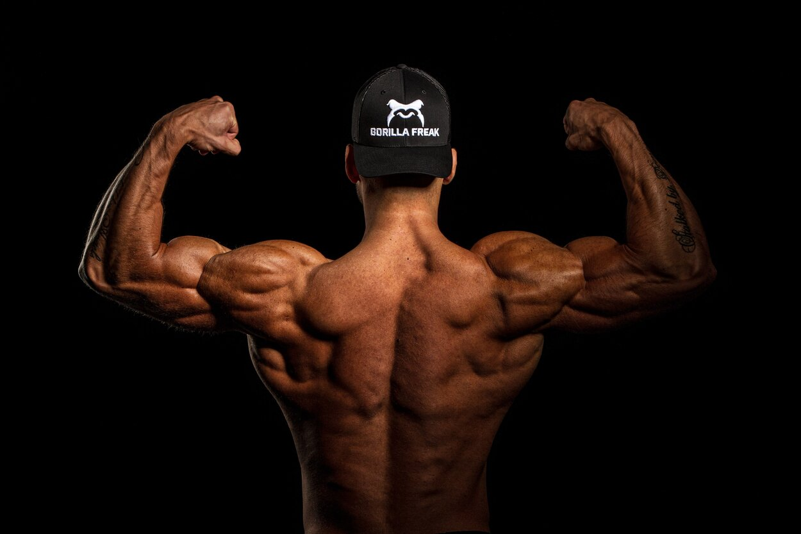
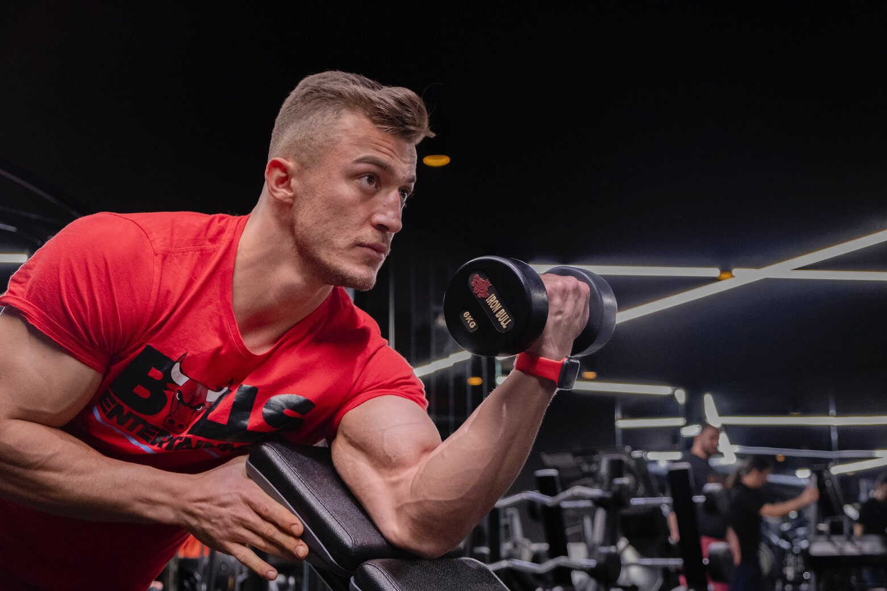

Anatomía
Los músculos principales del pecho son el músculo pectoral mayor y el músculo pectoral menor. El músculo pectoral mayor es el más grande y se encuentra en la parte superior del pecho. Se extiende desde el hueso del hombro hasta el esternón y la clavícula.
El músculo pectoral menor se encuentra debajo del pectoral mayor y se extiende desde las costillas hasta el hueso del hombro. Ambos músculos trabajan juntos para ayudar a mover los brazos hacia el cuerpo y también son importantes en la respiración.
Los músculos principales de la espalda son el trapecio, el romboides, el dorsal ancho y los músculos erectores de la columna vertebral. El trapecio es el músculo más grande de la espalda y se extiende desde la base del cráneo hasta la columna vertebral y los hombros.
El romboides se encuentra debajo del trapecio y ayuda a estabilizar los omóplatos.
El dorsal ancho se extiende desde la cintura hasta los hombros y es responsable de la extensión y aducción del brazo. Los músculos erectores de la columna vertebral se encuentran a lo largo de la columna vertebral y ayudan a mantener la postura y a la extensión de la columna vertebral.
Los músculos principales del brazo son el bíceps y el tríceps. El bíceps se encuentra en la parte frontal del brazo y se extiende desde el hombro hasta el codo. Es responsable de la flexión del codo y también ayuda a la supinación del antebrazo.
El tríceps, por otro lado, se encuentra en la parte posterior del brazo y se extiende desde el hombro hasta el codo. Es responsable de la extensión del codo y también ayuda a la aducción del brazo.
Ambos músculos son importantes para la realización de actividades diarias que requieren el uso del brazo.
